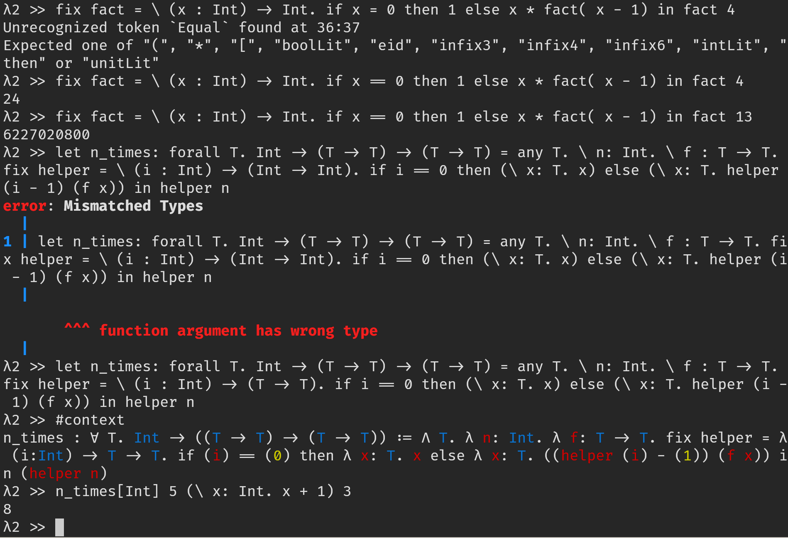

A language implementation for the Polymorphic Lambda Calculus (System F), written in Rust.
This project originated as a course project for CS6120 - Advanced Compilers at Cornell University.
This is an example of how you may give instructions on setting up your project locally. To get a local copy up and running follow these simple example steps.
rust using the method above should also have installed cargo.cd into the repositorycargo install --path compiler to install the executable of polylamb
cd into the directory compiler and run cargo build, which should produce an executable in compiler/target/debug/polylamb.
Type #help inside the repl to display a list available commands
Distributed under the MIT License. See LICENSE for more information.